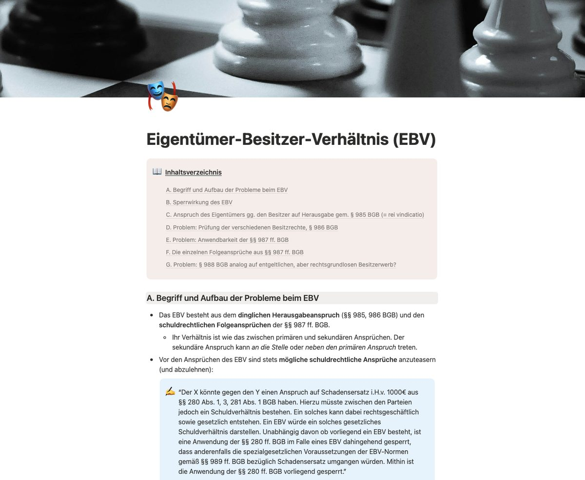
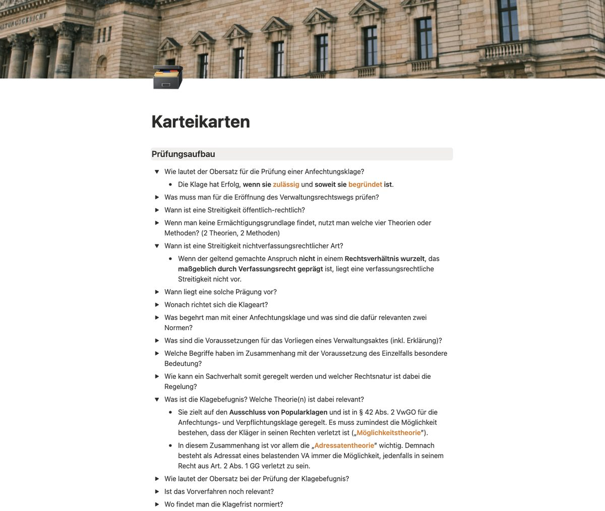
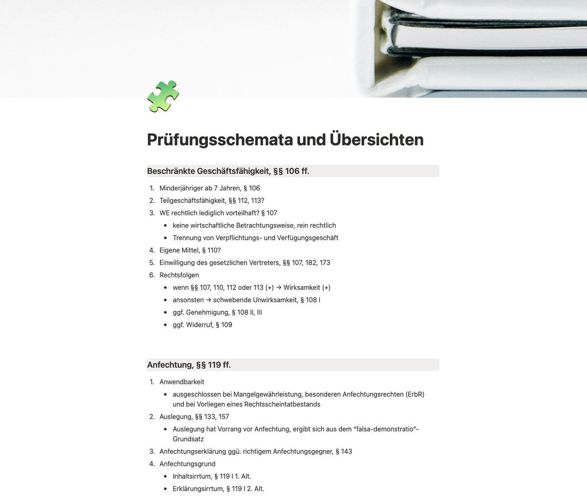

Prädikat ist planbar.1
Über 385 Kapitel mit Zusammenfassungen, Prüfungsschemata und Karteikarten – strukturiert wie eine Klausurlösung, nicht wie ein Lehrbuch. Direkt in Notion, sofort einsatzbereit.
Das Stellvertretungsrecht ist ein Rationalisierungsprogramm: Vertretungsmacht (Außenverhältnis) und Grundverhältnis sind strikt zu trennen – Abstraktionsprinzip.
(P): Anfechtbarkeit einer Vollmacht nach Betätigung – h.M. vs. a.A.
Definiere: Wissensvertreter
Wer – ohne Stellvertreter i.S.d. § 164 BGB zu sein – wie ein Vertreter damit betraut ist, für den Geschäftsherrn eigenständig Aufgaben zu erledigen und Informationen weiterzuleiten.
Prüfungsschema: Rechtsscheinvollmacht
1. Anwendbarkeit · 2. Rechtsschein der Bevollmächtigung · 3. Zurechenbarkeit beim Vertretenen · 4. Gutgläubigkeit des Dritten
Das Examen prüft Struktur.
Die meisten lernen Text.
Lehrbücher erklären – aber in der Klausur zählt, ob du in Sekunden das richtige Schema, die Definition und den Streitstand abrufst. Genau dafür ist Lex Prima gebaut.
Der Stoff, ohne Umwege
Jedes examensrelevante Thema komprimiert auf das, was in der Klausur zählt – mit (P)-Problemmarkern, ausformulierten Streitständen (h.M./a.A.) und Klausurhinweisen.
Prüfen wie der Korrektor
Vollständige Prüfungsschemata mit Definitionen und Streitständen an genau der Stelle, an der sie in der Klausur auftauchen – vom Gutachtenstil her gedacht.
Wiederholen mit System
Toggle-Karteikarten direkt im Kapitel: Frage lesen, selbst antworten, Antwort auftoggeln. So oft wiederholen, bis es sitzt – am Laptop und unterwegs in der Notion-App.
Keine Katze im Sack.
Echte Screenshots aus den Originalkapiteln – so arbeitest du mit den Modulen: erst verstehen, dann festigen.
Zusammenfassung durcharbeiten
Jedes Kapitel öffnet mit einem klickbaren Inhaltsverzeichnis und führt dich durch den Stoff: Grundlagen, (P)-Problemmarker, ausformulierte Streitstände und Formulierungshilfen im Gutachtenstil – wie hier beim Eigentümer-Besitzer-Verhältnis.

Mit Toggle-Karteikarten wiederholen
Sitzt der Stoff, beginnt das eigentliche Lernen: Im Karteikarten-Bereich fragst du dich selbst ab – Frage lesen, laut beantworten, Toggle öffnen, abgleichen. Definitionen, Obersätze und Theorien wiederholen, bis sie in der Klausur automatisch kommen.

Mit den Schemata-Seiten den Aufbau drillen
Zu jedem Rechtsgebiet gehören eigens angefertigte Schemata- und Übersichtsseiten – von der beschränkten Geschäftsfähigkeit bis zur Anfechtung. Prüfungsaufbau aus dem Kopf reproduzieren, mit dem Schema abgleichen, Lücken schließen. Sitzt der Aufbau, sitzt die Klausur.

Alle Screenshots: Originalinhalte aus den Modulen, Stand heute.
Drei Rechtsgebiete. Ein System.
Jedes Modul deckt sein Rechtsgebiet vollständig ab – inklusive Nebengebieten und Prozessrecht. Einzeln buchbar oder als Bundle.
Zivilrecht
- BGB AT, Schuldrecht AT & BT
- Sachenrecht & Kreditsicherung
- ZPO, HGB/GesR, ArbR, FamR/ErbR
Vom Vertragsschluss bis zur Zwangsvollstreckung – das komplette Zivilrecht in Prüfungsstruktur.
Modul entdecken → 71 KapitelStrafrecht
- AT: Vorsatz bis Konkurrenzen
- BT: alle examensrelevanten Delikte
- Strafprozessrecht (StPO)
Jedes Delikt als Schema mit Definitionen und Streitständen – vom Diebstahl bis zur Wahlfeststellung.
Modul entdecken → 145 Kapitel · NRWÖffentliches Recht NRW
- Staatsrecht & Grundrechte
- VerwR AT & Verwaltungsprozessrecht
- PolG, Kommunal- & BauR NRW
Das einzige Modul, das du landesspezifisch brauchst – konsequent auf die NRW-Gesetze zugeschnitten.
Modul entdecken →Ist dein Thema drin? Prüf's nach.
Durchsuche alle 385 Kapitel in Echtzeit – von „Abtretung" bis „Zwangsvollstreckung".
In drei Schritten zu deinem Lernsystem
Modul wählen & kaufen
Sicherer Checkout über unseren Vertriebspartner CopeCart – mit Rechnung, allen gängigen Zahlungsarten und gesetzlichem Widerrufsrecht.
In Notion duplizieren
Du erhältst einen Vorlagen-Link und duplizierst das Modul mit einem Klick in deinen eigenen Notion-Account. Der kostenlose Plan reicht aus.
Lernen & anpassen
Deine Kopie gehört dir dauerhaft: markieren, ergänzen, mit deinem Lernplan verknüpfen – am Laptop und mobil in der Notion-App.
Einmal zahlen. Für immer nutzen.
Kein Abo, keine versteckten Kosten. Dauerhafter Zugriff auf deine duplizierte Notion-Kopie inklusive.
Einzelmodul
- Zivilrecht, Strafrecht oder ÖffR NRW
- Zusammenfassungen, Schemata & Karteikarten
- Dauerhafter Zugriff auf deine Kopie
- Sofort startklar nach dem Kauf
Komplett-Bundle
- Zivilrecht + Strafrecht + ÖffR NRW
- Über 385 Kapitel & Schemata
- Du sparst 68 € gegenüber Einzelkauf
- Deine Kopie – für immer, ohne Abo
Zweier-Paket
- Freie Kombination aus zwei Modulen
- Zusammenfassungen, Schemata & Karteikarten
- Dauerhafter Zugriff auf deine Kopien
- Sofort startklar nach dem Kauf
*Alle Preise inkl. USt. Abwicklung, Rechnungsstellung und Widerrufsrecht über unseren Vertriebspartner CopeCart. Die Kauf-Buttons werden mit dem Launch der Zahlungsabwicklung freigeschaltet – bis dahin erreichst du uns über die Kontaktseite.
Häufige Fragen
Für wen ist Lex Prima gedacht?
Für Jurastudierende in der Vorbereitung auf das Erste Staatsexamen – vom ersten Semester bis zur heißen Phase. Das Modul Öffentliches Recht ist speziell auf NRW zugeschnitten; Zivilrecht und Strafrecht gelten bundesweit.
Wie bekomme ich Zugriff auf die Materialien?
Nach dem Kauf erhältst du einen Link, über den du das Modul als Notion-Vorlage in deinen eigenen Notion-Account duplizierst. Deine Kopie gehört dir dauerhaft – du kannst sie markieren, ergänzen und an deinen Lernplan anpassen.
Brauche ich einen bezahlten Notion-Account?
Nein. Der kostenlose Notion-Plan reicht vollständig aus, um deine Kopie zu nutzen und zu bearbeiten.
Was unterscheidet Lex Prima von Lehrbüchern und Skripten?
Wir ersetzen kein Lehrbuch – wir ersetzen das Chaos danach. Jedes Kapitel ist als prüfbare Struktur aufgebaut: Schema, Definitionen, Streitstände, Klausurhinweise. Du lernst so, wie in der Klausur geprüft wird.
Gilt das Widerrufsrecht bei digitalen Inhalten?
Der Kauf läuft über unseren Vertriebspartner CopeCart, der Rechnungsstellung, Umsatzsteuer und das gesetzliche Widerrufsrecht abwickelt. Details findest du im Bestellprozess und in den AGB.
Sind die Inhalte aktuell?
Ja – beim Kauf duplizierst du immer den aktuellen Stand unserer fortlaufend gepflegten Master-Vorlage. Ab dann ist deine Kopie deine persönliche Lernzentrale: Alle Inhalte sind von Tag eins vollständig da, und du machst sie zu deinem System – markieren, ergänzen, eigene Fälle und Rep-Notizen einpflegen, mit deinem Lernplan verknüpfen. Wir liefern die Startrampe, du bestimmst den Kurs.
Dein Examen beginnt mit der ersten guten Struktur.
Sichere dir dein Modul und lerne ab heute so, wie das Examen prüft – klar, vollständig und wiederholbar. Einmal gekauft, für immer deins.
Jetzt Module sichern